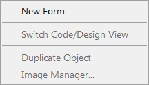
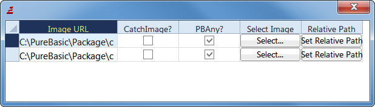
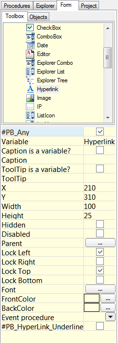

Integrated form designer
The PureBasic IDE has a very powerful integrated form designer, which allows to design easily windows and arrange gadgets on them. It supports almost all native PureBasic gadgets, menu and even status bar. A form file is a regular PureBasic file, so it can be easily modified without even open the form designer. The code parser isn't the same used by the compiler and therefore doesn't support all features, so when doing manual changes to a form file, it has to remain basic.Contents of the "Form" menu:

New Form
Create a new empty form. It will bring automatically the form panel tool on top.
Switch Code/Design View
Change the form view, switch from design mode to code view. A form is built from code, so if a change is made directly in code view, it will be reflected visually.
Duplicate Object
Duplicate the currently selected object.
Image manager

Display all the images currently used by the form. The image and its path can be changed easily here.
Form design panel

This panel list all available gadgets. Select one, and draw directly on the form the size needed. When a gadget is selected on the form, its properties are display on this panel and can be modified here.
Using the form designer in real world projects
The form designer has been created to allow modular forms and easy maintenance. Each form has to be in its own file. It can not have two form in the file (in other words, it should never have two OpenWindow() in the same file). An event procedure can be assigned to every gadget, and will be handled automatically in the event loop. The event procedures needs to be defined somewhere in the source code. Every form file should be named with the '.pbf' extension, so it will be correctly opened by the IDE. Form files can also be added to a project.
For example, to build a program which handle two windows, we will have to create two form files and one main file. The directory structure could look like that:Main.pb ; The main PureBasic file, which will includes the two forms file, and defines the events MainWindow.pbf ; The main window DateWindow.pbf ; Another windowIf we assume MainWindow.pbf has two buttons ('OK' and 'Cancel') and DateWindow.pbf has one calendar gadget, here is how the main file would look like (the main file is not handled by the form designer, it has to be written manually):XIncludeFile "MainWindow.pbf" ; Include the first window definition XIncludeFile "DateWindow.pbf" ; Include the second window definition OpenMainWindow() ; Open the first window. This procedure name is always 'Open' followed by the window name OpenDateWindow() ; Open the second window ; The event procedures, as specified in the 'event procedure' property of each gadget Procedure OkButtonEvent(EventType) Debug "OkButton event" EndProcedure Procedure CancelButtonEvent(EventType) Debug "CancelButton event" EndProcedure Procedure TrainCalendarEvent(EventType) Debug "TrainCalendar event" EndProcedure ; The main event loop as usual, the only change is to call the automatically ; generated event procedure for each window. Repeat Event = WaitWindowEvent() Select EventWindow() Case MainWindow MainWindow_Events(Event) ; This procedure name is always window name followed by '_Events' Case DateWindow DateWindow_Events(Event) EndSelect Until Event = #PB_Event_CloseWindow ; Quit on any window closeAs seen, it's easy to integrate visually designed forms in a program. Indeed it's also possible to continue to create window manually, or mix the two. To have all the control over the generated code, just switch to code mode and inspect it.